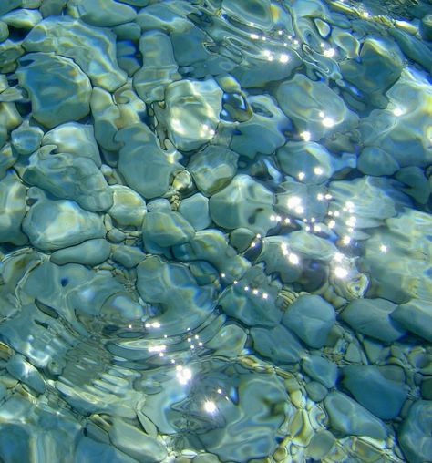

Hubungan Thailand dengan Indonesia sejak abad ke-18. Pada tanggal 7 Maret 1950, Thailand dan Indonesia membuat hubungan diplomatik satu sama lain. Hubungan diplomatic mereka sudah berjalan 67 tahun. Telah terjadi pertukaran kunjungan tingkat tinggi secara rutin, seperti presiden Indonesia berkunjung ke Thailand. Selain itu, kedua belah pihak mempunyai mekanisme bilateral untuk meningkatkan kerja sama, termasuk Komisi Gabungan di tingkat Menteri Luar Negeri. Pertemuan JC ke-9 dijadwalkan akan diadakan sesegera mungkin. Mereka berdua sudah membantu satu sama lain dalam waktu yang sulit seperti Indonesia mengirimkan minyak kepada Thailand saat krisis minyak sedunia di tahun 1970 memberikan dukungan keuangan kepada Thailand selama krisis keuangan Asia tahun 1997. Sama sebaliknya pada saat yang sama, Thailand mengirimkan pasukan untuk berpartisipasi dalam operasi penjaga perdamaian di Timor Timur pada tahun 1999 serta memainkan peran penting dan konstruktif dalam proses perdamaian di Aceh.